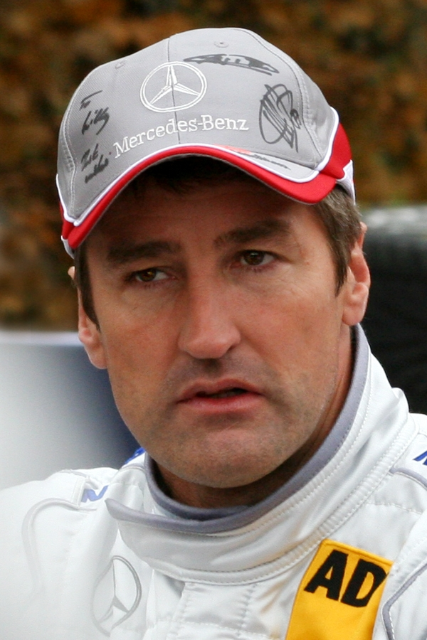

Auti i proizvođači
Svi auti koji se koriste u natjecanju predstavljaju normalne cestovne aute, ali su modificirani na način da zadovoljavaju regulacije koje postavlja natjecanje. To uključuje prilagođavanje motora, šasije, aerodinamke, kočnica, guma itd. Regulacije se mijenjaju svakih par godina i cilj im je osigurati blisko i uzbudljivo natjecanje, dovoljno jeftine aute da se privuče što je veći mogući proizvođača i timova te ostvariti što je veću moguću sigurnost samih vozača. Zadnje promijene u regulacijama su došle 2021. godine kada je odlučeno da će se koristiti GT3 specifikacija automobila.
Broj proizvođača koji su se natjecali u DTM-u od ponovnog pokretanja natjecanja (u 2000. godini) je preko 10, a jedino je Audi bio prisutan u svakoj sezoni. Svaki proizvođač sam odabire jedan od svojih cestovnih automobila koji će modificirati po zadanim regulacijama i koristiti u natjecanju. Određene dijelove će proizvođači sami raditi dok će neke, radi uštede, kupovati od drugih. Tako na primjer je Aston Martin, za vrijeme koje se natjecao, kupovao motore od Mercedesa.
Trenutna specifikacija automobila ima ubrzanje od 0 do 100 km/h za 2.8 sekundi te maksimalnu brzinu od 300 km/h. Vozačka pomagala poput ABS-a, TC-a, aktivne suspenzije, launch controla car-to-team radio veza su trenutno zabranjene.
Trenutno se u DTM-u natječe 6 proizvođača:
- Audi
- BMW
- Ferrari
- Lamborghini
- Mercedes
- Porsche
Vozači
U DTM-u će se često vidjeti kombinacija mladih i iskusnih vozača. Nerijetko su to i poznati vozači Formule 1 poput: Davida Coultharda, Jean Alesia, Ralfa Schumachera, Robert Kubica, te Mike Häkkinena.
Međutim, posljednjih godina sve više mladih vozača dolazi voziti u DTM kako bi 'pokrenuli' svoje trkače karijere. Najaktualniji primjer takvog vozača je mladi Novo Zelanđanin i vozač Red Bull-ove akademije Liam Lawson koji se prošle godine, u svojoj prvoj sezoni, do zadnje utrke borio za naslov. Neki od vozača koji su uspješno iskoristili DTM kao ulaznicu za Formulu 1 su: Christian Albers, Paul di Resta i Pascal Wehrlein.
Najuspješniji DTM vozač svih vremena je Bernd Schneider s 4 osvojena naslova 2000, 2001, 2003 i 2006. godine. Odmah iza njega nalazi se René Rast s 3 osvojena naslova te su tu još Mattias Ekström, Timo Schneider, Marco Wittmann i Gary Paffett s 2 osvojena naslova.
Aktualni svjetski prvak je mladi nijemac Maximilian Götz.
Staze
DTM, iako je originalno njemačko natjecanje, vozi se i na poznatim stazama u drugim zemljama europe. Trenutno je određeno da se 50% utrka vozi na nijemačkim stazama, dok se 50% vozi na stazama drugih europskih država.
Međutim, 2014. godine došlo je do dogovora da će se povremeno održavati zajedničke utrke DTM-a i SuperGT-a. SuperGT je japanska trkača serija po mnogočemu slična DTM-u. Ovo je dovelo do toga da se određen broj utrka održi u Japanu i okolnim zemljama.
Kalendar za 2022. godinu se sastoji od 8 legendarnih europskih staza:
| |
Portimao | 29. - 01. APR/MAY |
| |
Lusitzring | 20. - 22. MAY |
| |
Imola | 17. - 19. JUN |
| |
Norisring | 01. - 03. JUL |
| |
Nürburgring | 26. - 28. AUG |
| |
Spa-Francorchamps | 09. - 11. SEP |
| |
Red Bull Ring | 23. - 25. SEP |
| |
Hockenheimring | 07. - 09. OCT |
2022. vozači:
- MIRKO BORTOLOTTI
- NICO MÜLLER
- LUCAS AUER
- FELIPE FRAGA
- KELVIN VAN DER LINDE
- LUCA STOLZ
- MARCO WITTMANN
- DENNIS OLSEN
- MAXIMILIAN GÖTZ
- LAURENS VANTHOOR
- SHELDON VAN DER LINDE
- PHILIPP ENG
- MARO ENGEL
- MIKAËL GRENIER
- RENÉ RAST
- NICKI THIIM
- ARJUN MAINI
- THOMAS PREINING
- ESTEBAN MUTH
- DAVID SCHUMACHER
- MARIUS ZUG
- SEBASTIEN LOEB
- MAXIMILIAN BUHK
- CLEMENS SCHMID
- DEV GORE
- ESMEE HAWKEY
- ALESSIO DELEDDA
- ROLF INEICHEN